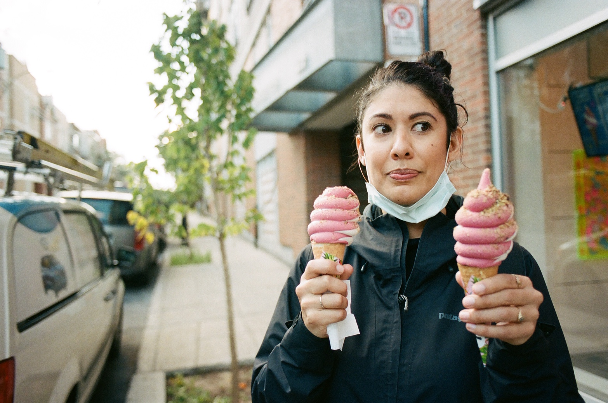

About Me
Lover of soft-serve ice cream, puzzles, and playing with my cats. After spending the last decade as an English teacher and jewelry designer, I discovered a love of coding during Covid. I found that coding is much like a big puzzle with many moving parts. Not only do the pieces need to fit in an aesthetically pleasing way, but the logic has to make sense, and it needs to be understandable to others who may come across it in the future. Programming is a doorway to continual growth and learning, and I am excited about the opportunity to connect with others to collaborate and bring new ideas to fruition.